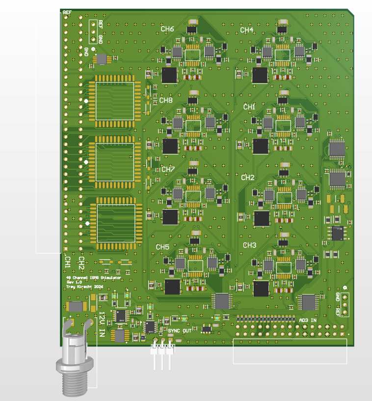
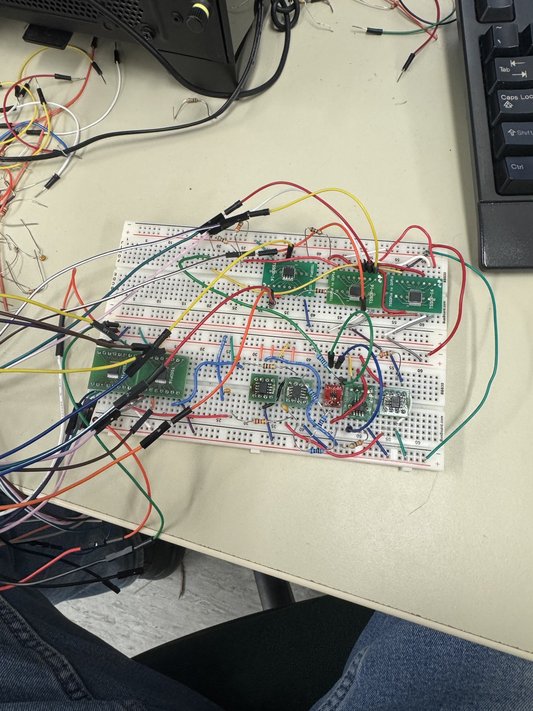
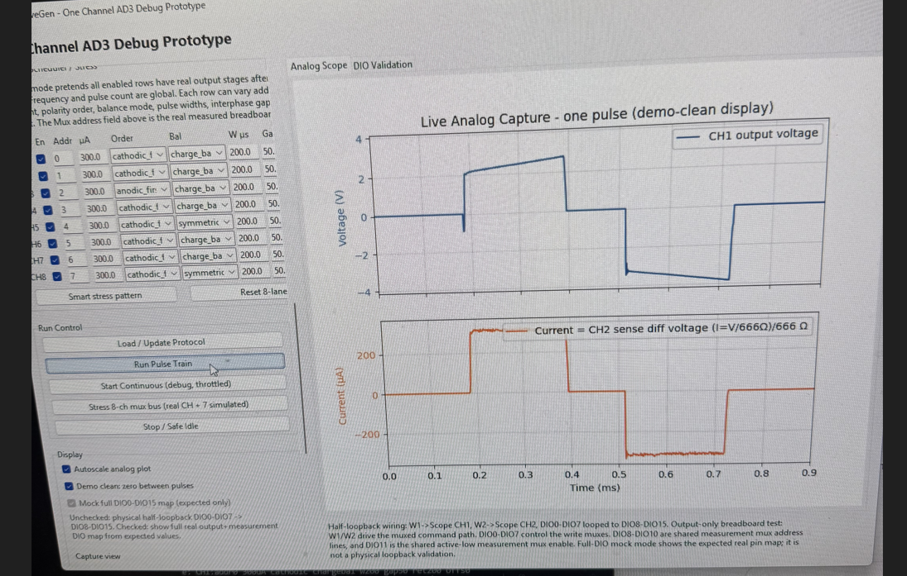

Mixed-signal R&D prototype · Centrepiece project
48-Channel Intraspinal Stimulation Platform
A routed eight-lane waveform-generator architecture for a 48-channel intraspinal stimulation research system. The project combines analog current-output design, sampled command-capacitor timing, AD3-based hardware-timed waveform control, crosspoint electrode routing, muxed measurement, PCB implementation, and staged hardware bring-up planning.
Project overview
The goal was to develop a bench prototype capable of producing programmable biphasic current pulses for a 48-channel intraspinal electrode system. The design target was not a final implantable stimulator; it was a hardware platform to validate the stimulation architecture before future miniaturization or custom IC development.
The final direction uses eight precision stimulation lanes routed to 48 electrode outputs. This avoids duplicating a full precision current-output stage 48 times while still allowing flexible access to many electrode sites. The routed-lane approach matches the experimental requirement: many addressable electrodes, but only a smaller number active during a given stimulation block.

System requirements
- 48 electrode outputs plus a reference/common-return path, with possible future expansion toward 64 outputs.
- Up to approximately eight active stimulation lanes routed to selected electrode sites.
- Programmable biphasic current pulses up to approximately 300 µA.
- Target pulse widths of roughly 100–500 µs and interphase intervals from 0–100 µs.
- Stimulation frequencies in the 1–100 Hz range.
- Support for symmetric and asymmetric pulse shapes, calibration, measurement, and future closed-loop work.
- Bench-prototype safe states: no unintended stimulation during startup, reset, routing changes, or AD3 disconnects.
Architecture selection
Several architectures were evaluated before settling on the eight-lane routed design. A fully independent 48-channel system would provide maximum flexibility, but it would require 48 copies of the expensive and sensitive analog output circuitry. A full muxed sample-and-hold system reduced analog duplication, but made timing, control-line count, and channel conflicts much more difficult. A Howland/current-pump approach was considered, but did not remove polarity-switching complexity and was less attractive for this first prototype.
The selected architecture uses eight feedback-controlled sampled-command source/sink lanes, routed to 48 electrodes through three AD75019 analog crosspoint matrices. This keeps the precision current-control hardware local to eight active lanes while allowing flexible electrode assignment.
Output-stage design
Each active lane uses separate PMOS source and NMOS sink branches for the two pulse polarities. Short AD3-controlled write windows program command capacitors through TMUX4051 analog muxes. During the stimulation phase, the capacitor voltage sets the target sense-resistor voltage inside an op-amp feedback loop, so the output current is controlled by feedback rather than by an open-loop MOSFET gate voltage.
- Two command capacitors per lane: one for the source branch and one for the sink branch.
- Separate PMOS/NMOS current-control loops for biphasic operation.
- 2 kΩ sense-resistor scaling: approximately 0.6 V maps to 300 µA.
- Output off state during gaps, startup, and route changes.
- Compensation/gate resistance/gate protection included after breadboard stability testing.
Breadboard validation and lessons learned
The one-channel breadboard prototype was used to validate the output-stage direction before the full PCB. This testing confirmed the basic source/sink current-control concept, but also exposed the practical analog issues that shaped the final design.
- Early sense-path loading caused poor low-current behavior; adding buffers between sense nodes and the measurement path fixed the issue.
- After the buffers were added, the PMOS/source loop required compensation to control ringing and improve stability.
- Resistive and electrode-like loads were both considered because the electrode interface is not an ideal resistor.
- High-resistance loads showed that compliance voltage, not feedback concept, was the main limiting factor.
- Testing at approximately ±7.8 V rails supported moving beyond the original ±5 V prototype supply assumption.

AD3 timing and software validation
The Analog Discovery 3 is used as the first prototype timing and control hub. Live Python/USB updates were tested and rejected for pulse-critical timing because the command path has too much latency and jitter for 100–500 µs stimulation phases. Instead, the software builds complete analog and digital timing frames, loads them into the AD3, and lets the AD3 play them back using local hardware timing.
- W1/W2 generate shared source/sink command-bus voltages.
- DigitalOut controls command mux addresses/enables, measurement selection, crosspoint programming, LED data, and common-return enable.
- Preloaded playback is used for pulse edges, mux write windows, phase timing, and interphase gaps.
- Live software control is reserved for slower updates between stimulation blocks.
- DWF SDK profiling showed configure/status calls are expensive, while many setters/data upload calls mainly stage driver data.
- Dual AnalogOut mode issues were traced to incorrect user-level buffer packing; single-frame packing fixed the tested dualcustom/dualpattern behavior.

PCB implementation
The full PCB implements the AD3 interface, ±7.8 V analog rails, command-capacitor muxing, eight output lanes, muxed measurement, common-return control, three AD75019 crosspoint matrices, status indicators, sync output, and safe startup defaults.
- Four-layer PCB: top analog/component routing, internal solid ground plane, internal power distribution, and bottom digital/overflow routing.
- External 12 V medical adapter input with fuse and reverse-polarity protection.
- LT3045 positive analog rail and LTC3261 + LT3094 negative analog rail for approximately ±7.8 V operation.
- Three AD75019 16×16 crosspoint matrices route eight active lanes to 48 electrode outputs.
- ADG1419 common-return switching and reference/ground jumper options.
- Addressable lane LEDs, rail status LEDs, and sync header for experiment/debug visibility.
- Pullups/pulldowns enforce safe default states when AD3 pins are disconnected or not yet configured.
Control and DIO allocation
The AD3 digital lines were allocated to support command-cap programming, measurement selection, crosspoint programming, status indicators, and common-return control within the 16 available DIO lines.
Planned bring-up
The PCB and parts are currently on order. The full version will be brought up in stages rather than assembled and powered all at once. This is intended to reduce the chance of damaging expensive crosspoint/output-stage parts and to make faults easier to isolate.
- Bare-board inspection: connector orientation, rail-to-ground resistance, shorts, and continuity.
- Power entry: barrel jack polarity, fuse, reverse-protection diode, protected 12 V rail, and current limit.
- Regulators: +7.8 V, −7.8 V, 5 V/D_VCC behavior, ripple, and heating.
- AD3 connector: DIO defaults, pullups/pulldowns, W1/W2 routing, trigger pins, and safe states.
- LEDs and level shifting: one LED first, data polarity, LED current, and switching behavior.
- One output lane: command caps, gates, source/sink current, off state, compensation, and resistive load testing.
- Measurement path: voltage/current capture, mux selection, scaling, and loading effects.
- One AD75019: serial programming, default-open behavior, selected route continuity, and isolation.
- Full routing and multi-lane tests: CH1–CH48 validation, common return, reference jumpers, and varied stimulation patterns.
Known limitations and future direction
The first PCB is a bench prototype, not a final implantable or fully closed-loop device. It is intended to validate the routed-lane architecture, output-stage behavior, measurement path, and control strategy. Fast pulse-to-pulse closed-loop updates are not practical through live Python/USB, so future versions may benefit from a local embedded controller, FPGA/Zynq sequencer, or eventual custom mixed-signal IC controller.
- Compliance voltage remains the main limit for very high-resistance loads.
- Calibration is required for accurate source/sink current delivery.
- PCB loop stability and measurement noise must be characterized after assembly.
- Crosspoint routing should be updated only while output lanes are blanked or inactive.
- Future work could include embedded/FPGA control, 64-channel expansion, more active lanes, and closed-loop experiment support.
Tools & technologies
What this project demonstrates
This project demonstrates end-to-end hardware/software ownership: evaluating architectures, rejecting designs based on real limitations, validating one-channel analog hardware, profiling the timing toolchain, selecting parts, laying out a dense mixed-signal PCB, reviewing manufacturing files, and preparing a realistic staged bring-up plan.